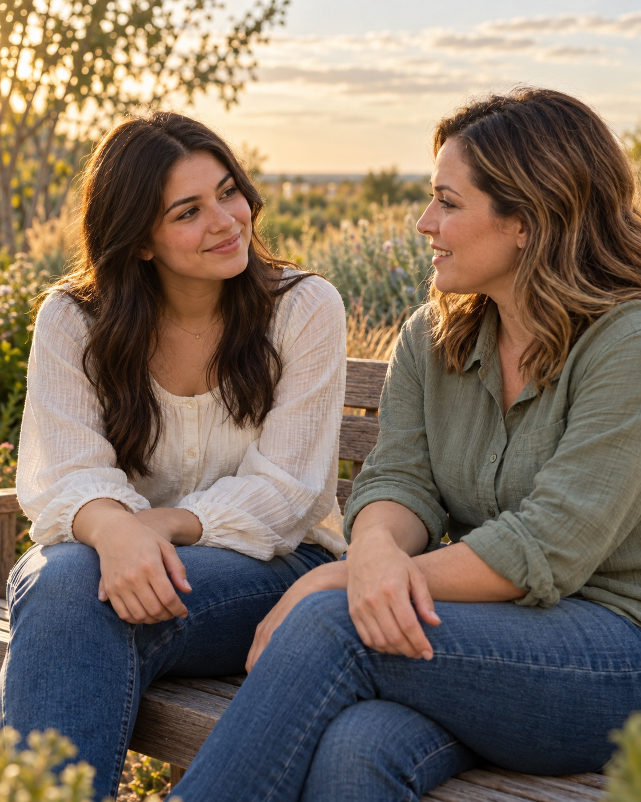

Bring your questions.
Feeling unsure, overwhelmed, or simply needing someone to talk to? You can begin with whatever is on your mind.
Midland, Texas & the Permian Basin
An unexpected pregnancy can bring a lot of feelings. Wherever you are right now, there is room for you here.
A listening ear. A caring conversation. No judgment.
Call 432-695-6955You don’t need to have the right words.

A little kindness can be a beginning.
Our heart for you
You are more than a circumstance.
You are a person worthy of care.
Choose Life Midland is a pro-life outreach with a simple heart: to meet people facing an unexpected pregnancy with compassion, encouragement, and hope for life.
We believe in the value of every life, including yours. Your questions, your feelings, and your story matter. You deserve to be treated with kindness and respect.
Let’s start with a conversationOne step at a time
No perfect plan. No perfect words.
Just a place to begin.
Feeling unsure, overwhelmed, or simply needing someone to talk to? You can begin with whatever is on your mind.
Your story deserves care. Share what you feel ready to share, and let the conversation begin at your pace.
You don’t have to sort through everything at once. A caring conversation can be the first small step toward hope.
Right here in West Texas
Midland is home. Our heart reaches across the greater Permian Basin, including Odessa and the surrounding communities.
Wherever you’re calling from in the Permian area, you’re welcome to reach out. Hope can start with a simple hello.
A little reassurance
And it’s okay to start with just one.
“I’m not sure where to start” is enough. You don’t need to prepare your story or have everything figured out before you call.
No. This invitation extends to Odessa and the greater Permian Basin, too. Call 432-695-6955 to start a conversation.
It means we believe every life has value, including the life of an unborn child and the person carrying that child. Our message is rooted in hope, care, and respect for you.
Yes. If someone you care about is facing an unexpected pregnancy, you are welcome to reach out and begin a conversation.
Yes. We welcome conversations about end-of-life questions and concerns, whether for yourself or someone you love. You deserve to be heard with compassion, dignity, and no judgment. Call 432-695-6955 to talk with us.
A new beginning can start small.
You matter. Your story matters. There is hope ahead.